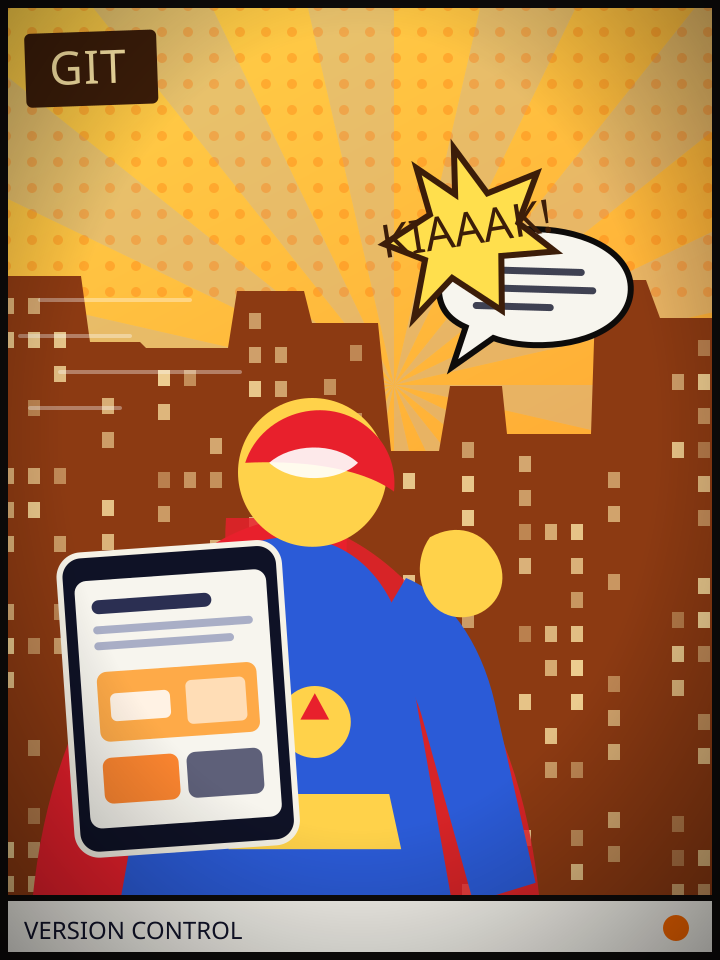

PANEL 01 / GIT
Version control with a safety net — branch, break it, roll back, repeat.
01PROLOGUE
EVERY PROJECT STARTS THE SAME WAY — A CURIOUS IDEA, AN EMPTY FILE AND NO REAL CLUE HOW LONG IT WILL TAKE.
01.1ARCHIVE
02MANIFESTO
I'm a student, but I don't wait for a syllabus to tell me what to build — every idea worth wondering about becomes a project, and every project hands me a skill I didn't have before. This is that learning made visible.
Based in Indonesia, I spend my time around programming, technology and digital development — turning ideas that start as notes into interfaces and small experiments that actually run.
I'm in no rush to look finished. I'd rather show the process: what I'm learning, what I break along the way, and how each project pushes the next one a little further.
03TRANSMISSION